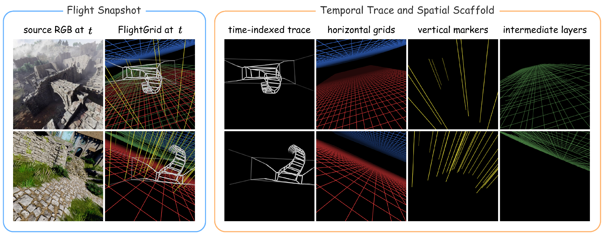

FlightGrid: an appearance-free flight representation
A flight must be specified to the generator without transferring the world in which it was recorded. Camera parameters specify motion exactly but are foreign to video models; visual references condition densely and naturally, yet necessarily disclose source appearance and geometry. FlightGrid resolves this trade-off as an appearance-free visual control signal constructed automatically from metric camera poses. It comprises a time-indexed flight trace, which preserves the temporal parameterization of the trajectory, and a metric spatial scaffold, which supplies a persistent world reference. The rendered signal contains no RGB pixels, scene depth, object boundaries or semantic labels from the source world.

Training proceeds in two stages. Control adaptation injects FlightGrid, the first frame and the text condition into a pre-trained video DiT through a VACE-style control branch; the backbone, the VAE and the text encoder remain frozen, so optimization is restricted to the control branch under the conditional rectified-flow objective. The resulting multi-step teacher is then distilled into a few-step student by score-based distribution matching. Following a standard DMD warm-up, a geometry-based verifier recovers the camera trajectory of each student sample and scores its agreement with the prescribed flight; that score, calibrated on the source flight before any generated sample is evaluated, reweights the sample’s own DMD update. Distillation thus reduces sampling cost and improves trajectory fidelity under an unchanged teacher-matching objective.
![Training overview in two panels. Left, control adaptation: FlightGrid and a first frame pass through a frozen VAE into patch embedding and 3D RoPE, entering a frozen Cosmos DiT through a trainable VACE control branch, with the text prompt entering by cross-attention. Right, reward-weighted DMD: a few-step generator produces a sample that is noised and denoised by a frozen target model and a fake-score model to form the DMD gradient, while a trajectory estimator recovers the sample's trajectory and converts its agreement with the prescribed flight into a reward weight applied to that gradient.](static/images/training_overview.png)